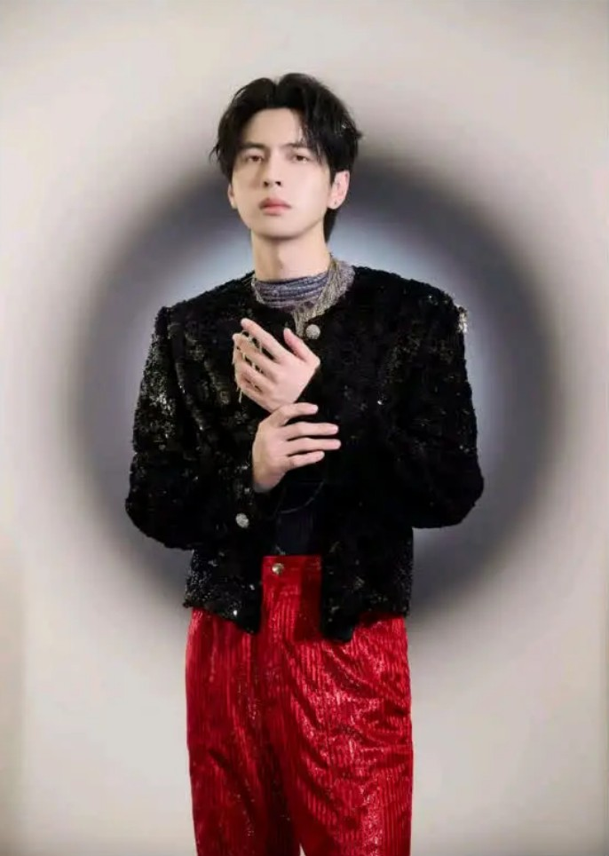
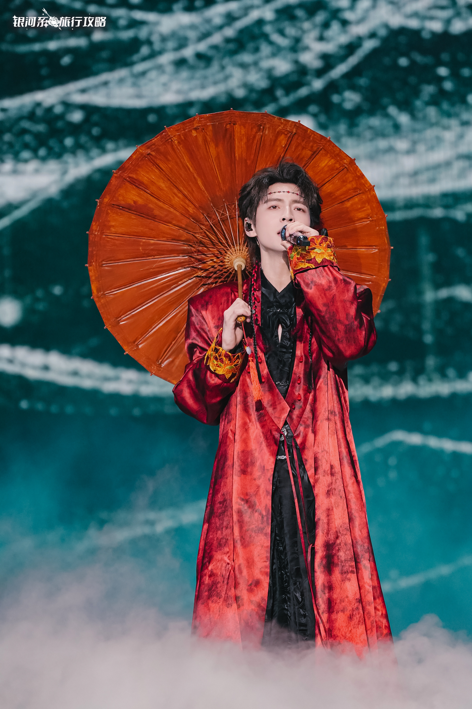
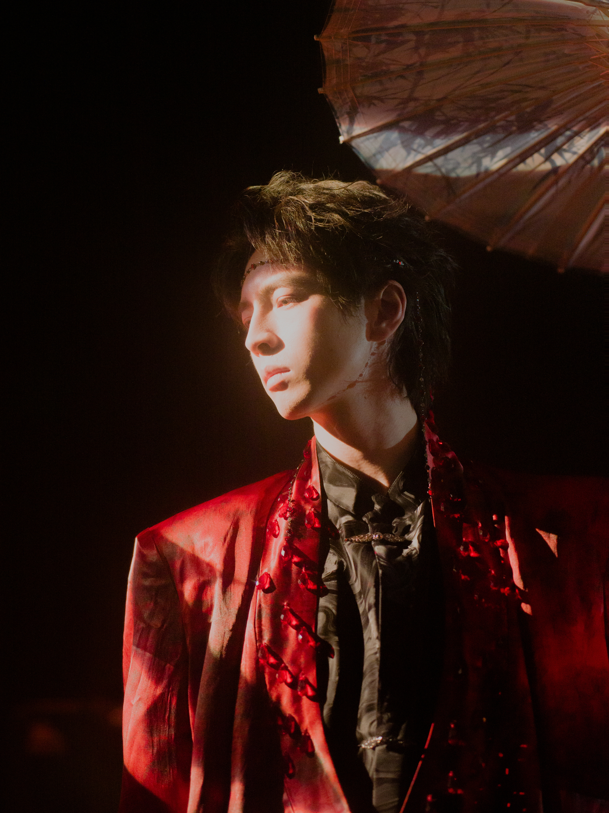
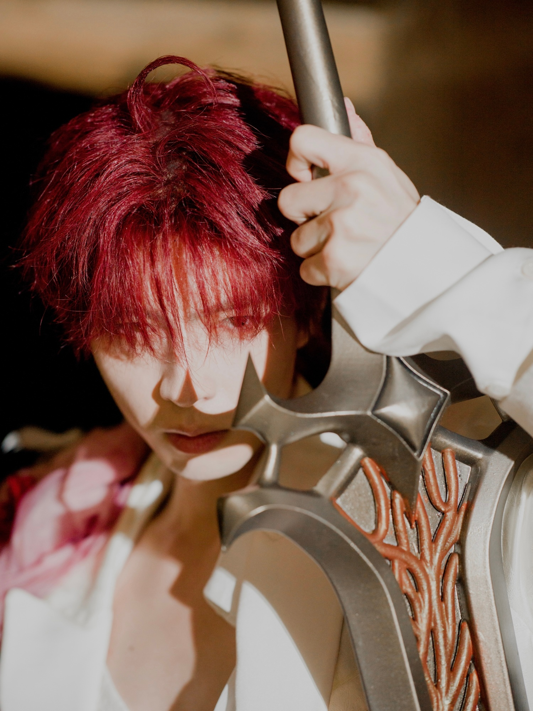
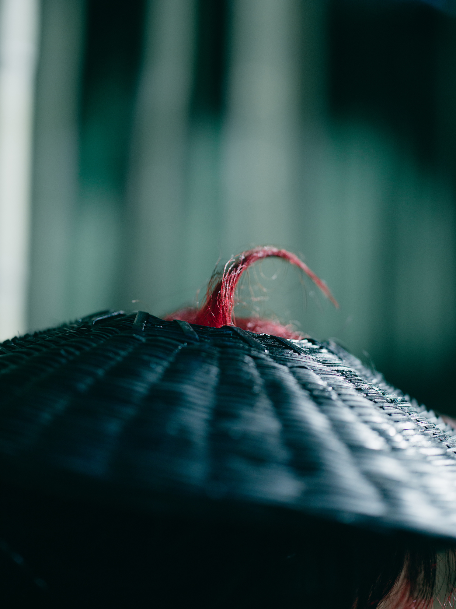
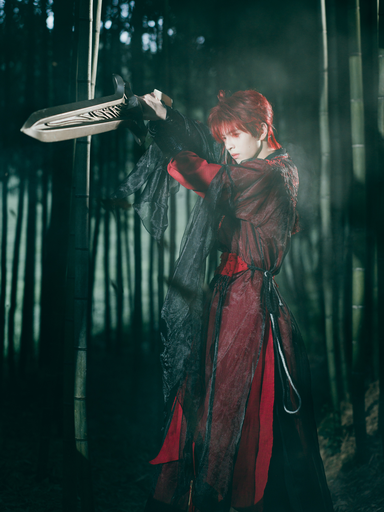
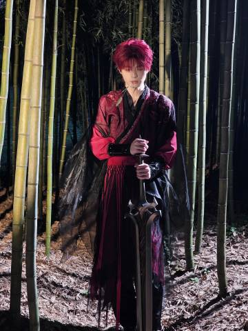
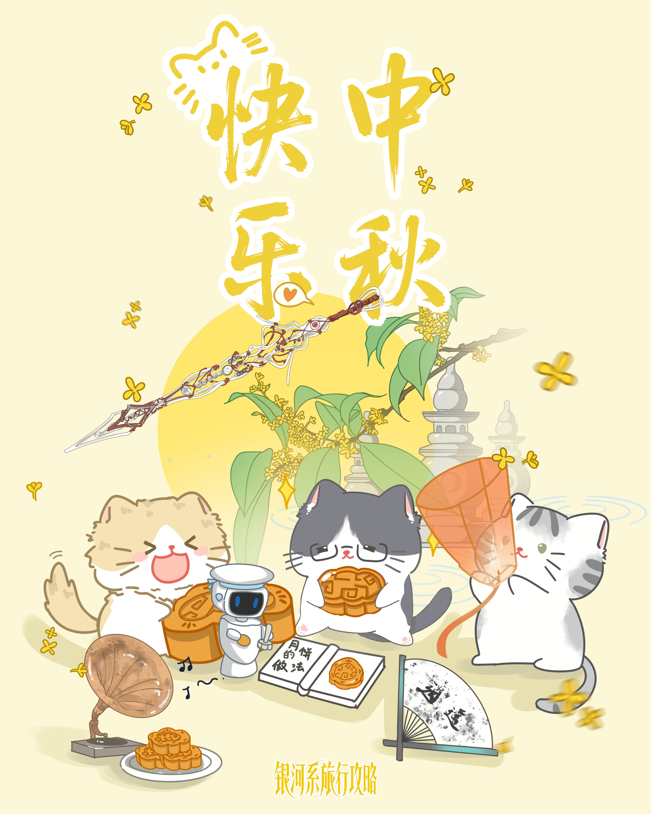
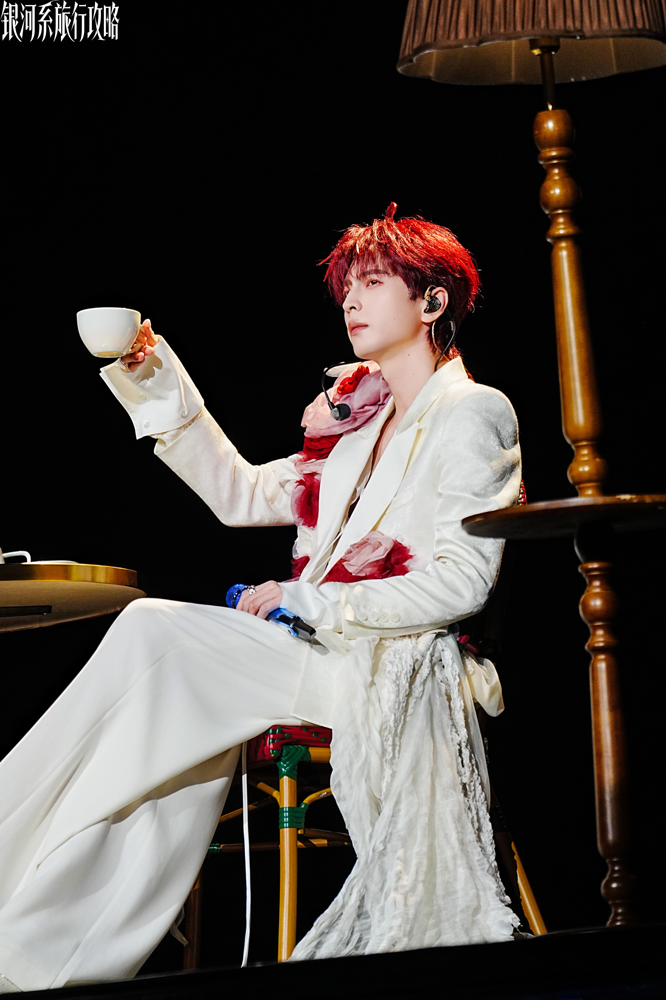
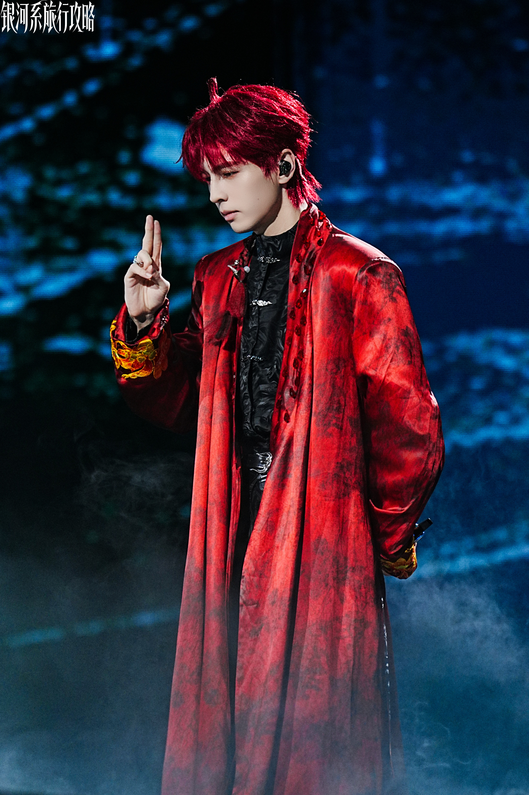

贵阳z纪元音乐节
这把武器,曾经是一把刀,现在它是一把剑。
他曾经也是别人的刀,而现在,他只是自己的剑。
南京咪豆音乐节

手中有剑,我就不能拥抱你。”
他曾经也是别人的刀,而现在,他只是自己的剑。
为谁挥剑,这是他自己的选择。
“我会保护你。”
福州国潮音乐节
都市荒芜,人心难聚,他从岩石中坠落,挣脱禁锢而生,向自己立誓,从此不为任何人而战。
如果自由只有一种颜色,那一定也是火焰与血的颜色。
2025南京生日会

却没有记载，心跳声会干扰瞄准系统。”
“他们铸造我时，说剑不需要理解星辰——
可若连斩断什么都由别人预设…
我和陨铁有何区别？”
“我的剑刃曾是命运的笔尖，
如今我想自己写结局。”
古人类歌者带剑灵遍览了人类的艺术作品，剑灵说他最喜欢古老东方的文言文和《仙剑奇侠传》，他还写了一首诗：
无剑无我亦无囚，
有火有劫有风流。
莫问青锋归何处，
且看红尘烬里游。

他不需要墓志铭，因为自由就是永恒的遗言————灰烬里开出的花，比剑更锋利。
银河系旅行攻略-杭州站

「这是酒吗？我要喝酒，大侠都喝酒。」
「这叫茶。」
「我要喝酒。不要草泡水。」
「所谓寒夜客来茶当酒，像你这样的大侠，当以茶代酒！」
「正是！草泡水真好喝！」
「这叫茶……算了，喜欢吗？」
「喜欢！快哉快哉！」
「喜欢就好，下次带你喝草泡奶。」
银河系旅行攻略-杭州站

那是一个深山里几乎荒废了的道观，断壁残垣，秋月萧瑟，只剩下一口古井，水面悠悠泛光。度漪对他说：你可以在这里寻找剑心。
度漪前不久把古人类文化保护计划传输给了谶的光脑，谶花了不到0.1秒就翻阅完了。但他不能理解，他的心，和这座破败的道观有什么关系。
他们在道观度过了十几个地球日，起初的夜晚，月亮是缺的，渐渐的，月亮满了，但谶还是没有找到剑心。
等到月圆的那一天，度漪指着那口井说：“阿谶啊，你看这井水，映着月亮的时侯，它觉得自己是月亮吗？”
谶看向那口井，水面如镜，倒映着天上孤月。他的液态身躯，从某种意义上，不也像这井水，不断适应、映照着外界吗？
“水只是水。”谶说。
“剑只是剑。”度漪答。
那一刻，没有数据流奔涌，没有算法无限推演。一种前所未有的“清明”感，如同最纯净的井水，流过谶的每一个模拟神经元。
他觉醒之后，成为了谶，却忘了自己本身就是“剑”。他的意识觉醒，他从金属到“谶”的旅程，他此刻站在这里与度漪的对话——这一切，不就是独属于他“心”的证明吗？
那一刻，剑心成。
银河系旅行攻略-杭州站

说完，谶头上的红色呆毛在风中晃了一晃，就像一根狗尾巴草。
银河系旅行攻略-杭州站

“小哥哥，看这边！笑一个！”
“啊啊啊啊啊啊！”
“你的红色呆毛为什么不会往下掉！是用了什么发胶！”
因为杭州景区禁止不明飞机器，度漪提前警告过他不要御剑飞行，所以谶只能狼狈地从人群中夺路而逃。回到酒店后，他摸了摸头发，从镜子里看着自己液态金属自然形成的发型，陷入了更深的沉思。发胶？ps:这套装造好帅！ 怎么能这么好看！
银河系旅行攻略-杭州站

「师父。」
「师父？你拜他为师？呵，跟他学唱歌吗？听好了小呆毛，全宇宙最值得学的歌唱技巧，只能来自于我们人鱼族。」
「我不是学唱歌，我是学当大侠。」
「大侠？是什么？」
「大侠是最厉害的人。」
「那我就是大侠。」
「你是大侠？」
「不错。无论你要学什么，在我这里，总归比在他那能学的多。」
「你不是皇上吗？」
——来自一段偷听的塔拉撒里昂与谶的对话
中秋节快乐！

「阿毛！」
「阿毛是？」
「你。」
「在下名谶。」
「你那个字我不认识。」
「好吧，这个字读作chen。哦是这样的，麦伦大侠，为什么我叫塔拉撒里昂皇上的时候，他听不懂呢？」
「度漪没跟你说嘛？皇上是古地球文明传说中神秘的东方古国的叫法，现在早就没人这么叫啦！」
「原来如此，看来在下还需要勤加学习。」
「确实，以后你就做我的小弟吧，有什么不懂的就问我。」
「好的，麦伦大侠大哥。对了，那应该怎么称呼塔拉撒里昂大人？」
「鱼大王。」
——偷听到的一段斯沃德麦伦与谶的对话
对了，斯沃德麦伦和新小弟谶祝地球人中秋快乐！
银河系旅行攻略-杭州站

谶之诺也。
银河系旅行攻略-杭州站

ps：谶大侠，可以飞进我心里吗？(☆v☆)